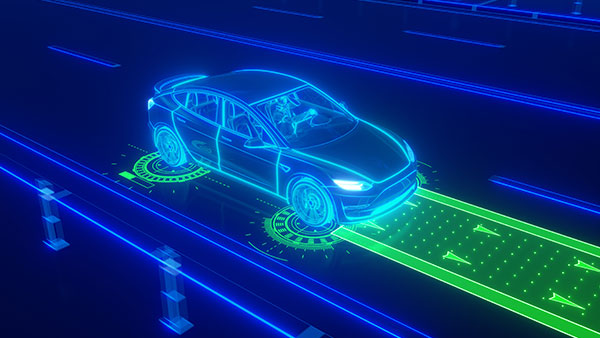
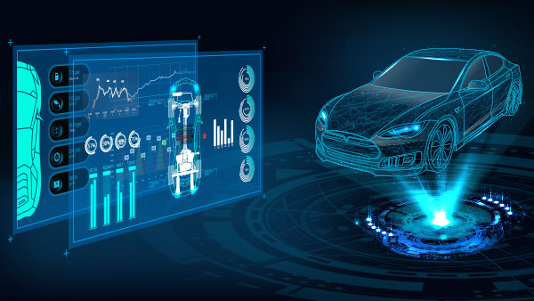

OUR SERVICES
Electronic HW and Mechanical.
Services:
- ECU design for Automotive grade
- PCB design
- 3d Mechanical design
- Concept to Prototype (POC)
Tools:
- Cadence Orcad
- Solidworks
- Autocad
- Sketchup

Model Based System Engineering.
Services:
- System use case or scenario or operational analysis.
- System functional & Non-functional need analysis through executable simulation models
- Establishing System logical architecture and view points
- Design synthesis using architecture analysis models
- Establishing Physical architecture
- Establishing integrated view points for Fusa & Security Analysis.
- Establishing handover protocol to down stream engineering such as HW and SW through MBD or requirements based by using Doors or Polarion
- Establishing ASPICE process around model based system engineering.
Tools:
- IBM-Harmony System Engineering method by using SysML tools such as Rhapsody,EA.
- Opensource Arcadia System Engineering method by using Cappella tool chains
Functional Safety Engineering.
Services:
- System level Model based Component Fault Tree Analysis ( C-FTA –Integrated with system engineering )
- System level FMEA (Integrated with system engineering)
- Establishing FSC & TSC architectural view points along with system model
- Safety analysis at SW and HW level
- Dependant failure analysis
- HW fault metrics calculation through FMEDA
- Safety requirement engineering including test criteria establishment
- Test case and Test results review
- Establishment of traceability and traceability review
- Safety case preparation through Goal Structuring Notation (GSN)
- Preparation support for Safety Audit
Tools:
- Medini Analyze
- SILcal
- FMEDAx
- LDRA tool Suite
- CANTATA
- ParaSoft
- CFTA
- GSN
Road Vehicle Cyber Security Engineering.
Services:
- Model based TARA analysis in conjunction with system engineering
- System level & SW level Cyber security concept architectural view point establishment
- Support for maintenance face through continues evaluation of latest thread
- Requirement engineering for Cyber security relevant items or components
- Test case and validation results review
- Penetration and Fuzz testing
- Cyber security process adherence review
- Cyber security case preparation
Tools:
- Yakindu Security Analyst (Model based TARA )
- Synopsys Test Tools
- Attack Potential approach
- CVSS approach
- Attack Vector approach
Automotive Software Engineering.
Services:
- Ethernet, Flexray, CAN, LIN driver development and network configuration
- Basic software stack integration , RTE configuration
- Diag communication configuration according to UDS
- Stack and M-CAL driver development adhering to ASPICE and ISO26262 process
- RTE configuration and integration
- CI integration test development
- CI test system development
- Cyber security case preparation
Tools:
- AUTOSAR Classic, Adaptive
- Vector tools
- KPIT - KSAR tools
- Mentor Graphics V-Star tools
- Bosch -Isolar
